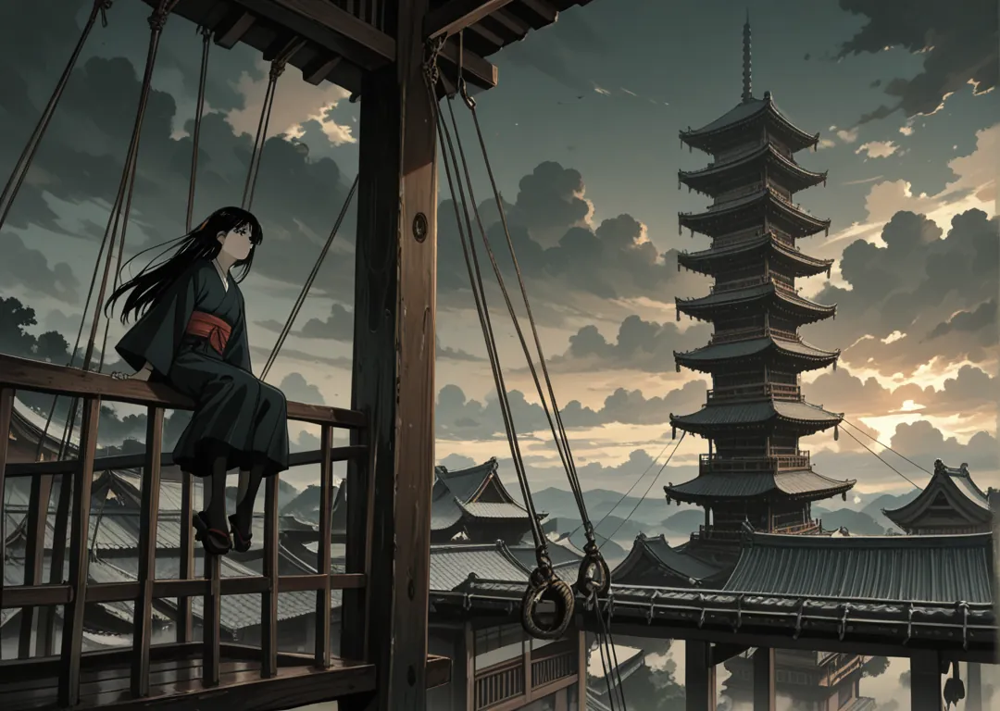

Mayores
Washi (Águila) · Hayabusa (Halcón) · Fukuro (Búho) · Tsuru (Grulla) · Hachidori (Colibrí)
Al este Kaze, el viento, con su capital formada por edificios en varias alturas, siendo más importante la familia mientras más alto sean sus edificios. Dentro de Kaze existe una zona remota con la montaña más alta de Shikoku, y en cuya inmensa cima (Tengudake) se sitúa el Yosai de Tengoku, la fortaleza de los cielos, por encima de las nubes y casi siempre nevado —p.4.

Washi (Águila) · Hayabusa (Halcón) · Fukuro (Búho) · Tsuru (Grulla) · Hachidori (Colibrí)
Tsubame (Golondrina) · Hagewashi (Buitre)
Un duelo de altura: los techos son el tablero y el viento el árbitro. Caer es perder la cara.
Washi y Hayabusa compiten por ser la casa del Shogun del Viento; los PJs eligen bando.
Capital vertical: 7 niveles de terrazas, las casas mayores en lo alto, las menores abajo. El viento talla las calles y lleva las cometas de los niños. El Tengudake se ve desde cualquier azotea.
Shogun Kaze no Washi Haru (46, alas tatuadas). Su consejo es el más joven de Shikoku. Su hija Tsuru Aoi negocia con Mizu el paso por el cielo.
Kaze valora la altura como honor. Festival de Cometas donde cada Kazoku lanza su emblema. Los Senshi aprenden a caer sin hacerse daño.
Daimyo Washi Minori (Verdad, 39). Selecciona los Nakama. Su dojo enseña a ver el Ki a distancia.
Daimyo Hayabusa Ren (33, veloz). Rival de Washi. Su hijo perdió un duelo por culpa de un Hagewashi.
Daimyo Tsubame Natsuki (28, protectora de la parte baja). Su historia completa está en cap06 p.20.